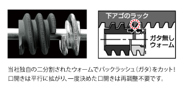
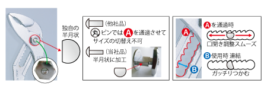
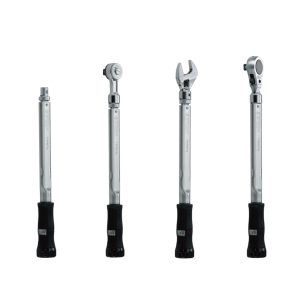
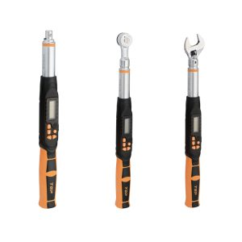
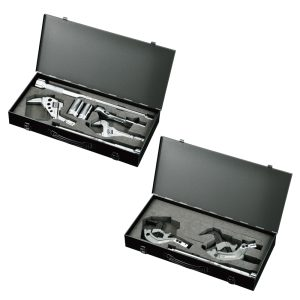
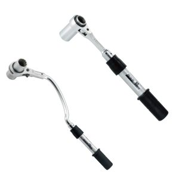
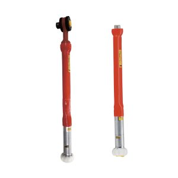
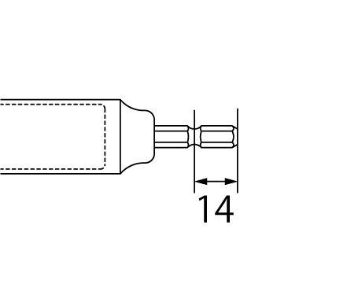
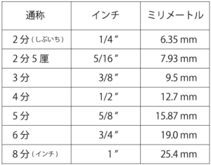
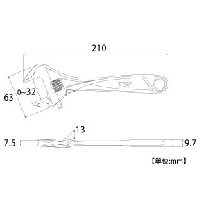

FAQ
よくある質問
FAQよくある質問
お問い合わせの多いご質問をまとめました。カテゴリまたはキーワードからお探しください。
A
通常品はウォームが1つですが、ハイパーモンキZERO、ワークワイド、薄型ストレートモンキ、薄型イグザクトレンチは、二分割ウォームを採用しております。ウォームが1つではどうしても、下あごラック部とウォームにバックラッシュ(ガタ)があります。二分割にすることで、互いのウォームで下あごラック部を挟み、ガタを無くしております。

A
つぶれたネジ山の修正用です。ネジ切りはできません。ステンレスボルトの修正は可能です。
A
長いボルトが通るように貫通にしてあります。12角部は、ナットが通り抜けないように奥に段差がついています。
※一部製品を除きます。
※一部製品を除きます。
A
欠けではございません。口幅調整が細かく出来るようにするため、半月状になっております。

A
“モニターに表示される数字”の最小表示になります。トルク精度を保証するトルク値の値とは異なります。
A
A
A
校正証明書の有効期限は未使用の場合は校正日より3年間有効、有効期限内でご使用の場合、使用開始日から1年間有効です。トルク精度を維持するために年1回、または5000回のご使用時毎に定期的な校正をおすすめします（有償）。
A
最初から同梱されているものと、購入時に有償で発行可能なものがあります。詳しくは各製品ページをご確認ください。
トルクレンチシリーズ

プリセット形トルクレンチシリーズ校正証明書付属品
デジタルトルクレンチシリーズ校正証明書付属品
配管継手・TMW形・TPW形トルクレンチシリーズ校正証明書付属品
水道本管用トルクレンチシリーズ付属しない（有償で発行可）
絶縁トルクレンチシリーズ校正証明書付属品
A
可能です(有償)。ご購入の販売店またはトップ製品取扱店へお問い合わせください。
A
有償となりますが、再発行が可能です。ご購入の販売店までお問い合わせください。
≪校正証明書の再発行について≫
・再校正を伴わない場合、校正日は変更ありません。発行日は、ご依頼があって再発行した日付に更新されます。
・再校正を伴う場合、校正日・発行日とも更新されます。
≪校正証明書の再発行について≫
・再校正を伴わない場合、校正日は変更ありません。発行日は、ご依頼があって再発行した日付に更新されます。
・再校正を伴う場合、校正日・発行日とも更新されます。
A
トレーサビリティ体系図とは、計測器そのものが校正されていて正確であることの証明書のひとつで、校正された機器が国家標準／国際標準までトレース（追跡）出来ることを体系化したチャート図です。計測器の基準を明確に統一し、それによって計測される品質を担保するものとして、 “トレーサブル” = “全ての基準をさかのぼることが可能” であることを証明します。
A
当社のシャンク部の長さは14mmのタイプのみとなります。

A
3分(さんぶ)とは、3/8”(インチ)のサイズの通称になります。

A
18V以下の電動工具にお使い頂けますという意味です。
A
製品の仕様上、13mm表記と14mm表記がありますが、どちらも問題なくインパクトドライバーに使用できます。
A
対応しておりません。シャンクがソケット部と一体になっているものは、18Vには対応しておりません。
A
軽自動車でおよそ80~100N・m、普通車でおよそ100~120N・m必要です。保証トルクの範囲外ですので対応しておりません。大きなトルクがかかると軸折れする可能性があります。インパクト用ソケットをお勧めします。
A
申し訳ありません。当社では製造しておらず、お取り扱いがありません。
A
申し訳ありません。樹脂製のソケットは当社では製造しておらず、お取り扱いがありません。
A
メガネレンチ・ラチェットレンチで使用する際に、レンチからソケットが抜け落ちないようにするためです。
A
お取り寄せに対応いただいております当社製品取扱の販売店様・ホームセンター様で「TOPのユニバーサルソケットアダプターの部品」とご注文ください。部品の詳細はこちらをご覧ください。
A
ドリルチャック用替えシャンクのビスの仕様は下記の通りです。
| 製品番号 | ネジ仕様 | 長さ | ネジの向き |
|---|---|---|---|
| EDC-3S/EDC-3SS | M5×P0.8 | 20mm | 左ネジ |
| EDC-4S | M6×P1.0 | 25mm | 左ネジ |
A
ステップドリル、スパイラルステップドリル に、18mmの段がついているものがあります。鉄板の厚みにもよりますが、2～3mmの鉄板でしたら綺麗に穴あけができます。
A
ヘクスセッターボール付は、板バネからリングバネタイプに仕様変更しました。
A
ケースのみのご注文も承ります。お取り寄せに対応いただいております当社製品取扱の販売店様・ホームセンター様で「TOPのコンパクトソケットセットのケース」とご注文ください。
A
ご購入いただけます。お取り寄せに対応いただいております当社製品取扱の販売店様・ホームセンター様で「TOPのエクステンションバーのボール」とご注文ください。ボール以外に、板バネ等もご注文いただけます。
A
新品のインパクトレンチのCリング固定は、張力が高く入りづらい状態です。馴染みが出るまでは強く押し付けて装着していただきますようお願いします。
A
最長で「TNC-AL」+「TNC-A」の連結が可能です。
ただしご使用の際に横ブレが発生しやすくなりますので切断位置がずれてしまう恐れがあります。
ただしご使用の際に横ブレが発生しやすくなりますので切断位置がずれてしまう恐れがあります。
A
申し訳ございません、ご提供することはできません。各製品ページよりご確認ください。
画像例）
画像例）

A
化学物質安全性データシート (Material)Safety Data Sheet
化学品(液体・薬品 等)を現場において安全に取扱うための文書です。手工具は「固形物」で除外要件となります。ご不明な点がございましたら、お気軽にこちらよりお問い合わせください。
化学品(液体・薬品 等)を現場において安全に取扱うための文書です。手工具は「固形物」で除外要件となります。ご不明な点がございましたら、お気軽にこちらよりお問い合わせください。
A
RoHS指令は電気・電子機器に含まれる特定有害物質の使用制限に関する規制であり、RoHS2は適用範囲が拡大されたものになります。本来手工具は該当しませんが、環境への適応のため、管理体制を整えております。RoHS2対応とは使用制限物質がしきい値以下である対応製品のことを指します。ご不明な点がございましたら、お気軽にこちらよりお問い合わせください。
A
お取り寄せに対応いただいております当社製品取扱の販売店様・ホームセンター様で「TOPのユニバーサルソケットアダプターの部品」とご注文ください。部品の詳細はこちらをご覧ください。
A
ケースのみのご注文も承ります。お取り寄せに対応いただいております当社製品取扱の販売店様・ホームセンター様で「TOPのコンパクトソケットセットのケース」とご注文ください。
A
ご購入いただけます。お取り寄せに対応いただいております当社製品取扱の販売店様・ホームセンター様で「TOPのエクステンションバーのボール」とご注文ください。ボール以外に、板バネ等もご注文いただけます。
該当する質問が見つかりませんでした。キーワードを変えてお試しください。
お探しの内容が見つからない場合は、お問い合わせフォームよりお気軽にご連絡ください。